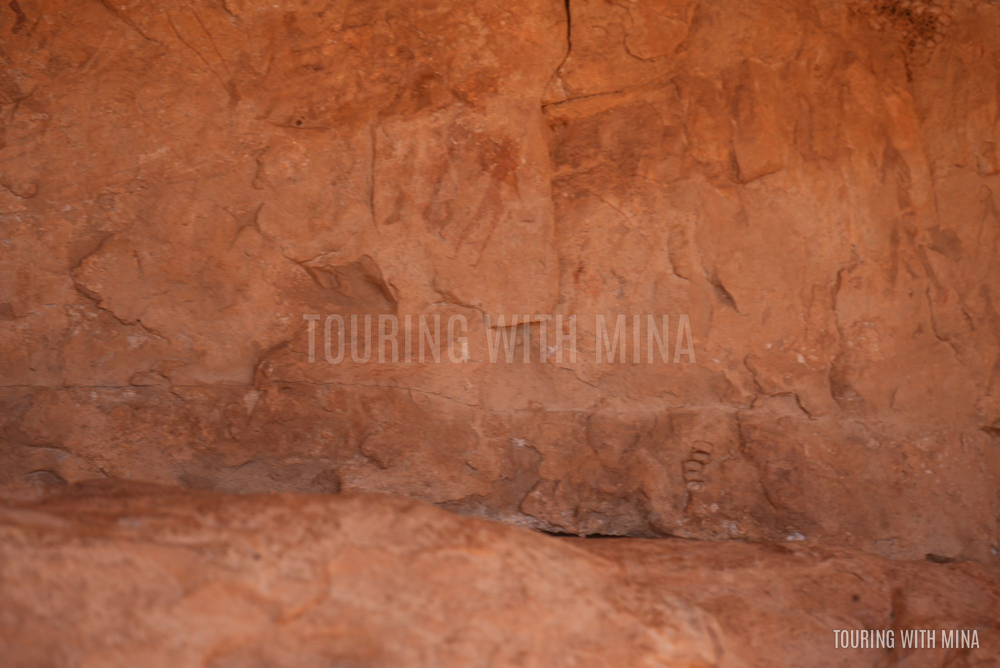

Red Tadrart tour, 7 days
The Red Tadrart, then a last day in Djanet: the market and the famous Weeping Cow engraving.
The itinerary
- Arrival
Arrival in Djanet
Welcome by our Tuareg friends and transfer from the airport to a camp for the night.
- Day 1
Tin Aressou
From the camp to Tin Aressou for lunch, and night at El Birdj.
- Day 2
El Birdj
From El Birdj, the adventure through grand landscapes begins. Lunch at the exit of El Birdj and night at Moul Enaga.
- Day 3
Tin Merzouga
From Moul Enaga to Bouhadyène for lunch, then night at Tin Merzouga, the highest dune in Algeria, for a spectacular sunset.
- Day 4
Aki Badène and Wan Azawa
From Tin Merzouga to Aki Badène for lunch, and night at Wan Azawa.
- Day 5
Ouan Nahar and Adjelati
From Wan Azawa to Ouan Nahar for lunch, and night at Adjelati.
- Day 6
Taïni
From Adjelati to Taïni for lunch, and night at Tigharghart.
- Day 7
Djanet and the Weeping Cow
From Tigharghart to the town market, lunch at Tigharghart and, in the afternoon, a visit to the famous Weeping Cow engraving. Dinner, then on to Djanet airport.
Throughout the trip you will discover rock paintings and engravings, panoramic viewpoints and impressive rock formations.
The itinerary may change with the weather or at the Tuareg team's discretion.



Travel info
Visa, flights, seasonFAQ
All questionsDestinations
Discover the placesMore tours
All tours
Ihrir tour, 6 days
The Ihrir oasis, the Issendilène canyon and its guelta, Djanet market and a meeting with Tuareg women.
107,000 DA per personView the tour
Ihrir tour, 7 days
The Ihrir tour with an extra day for Adayk, the famous Weeping Cow engraving and the Elephant rock.
118,000 DA per personView the tour
Red Tadrart tour, 6 days
El Birdj, Moul Enaga and Tin Merzouga, the highest dune in Algeria. Algiers-Djanet flights and visa included.
210,000 DA per personView the tourYour journey to Djanet starts with a message
Tell us your dates and wishes. Mina replies personally within 24 hours.